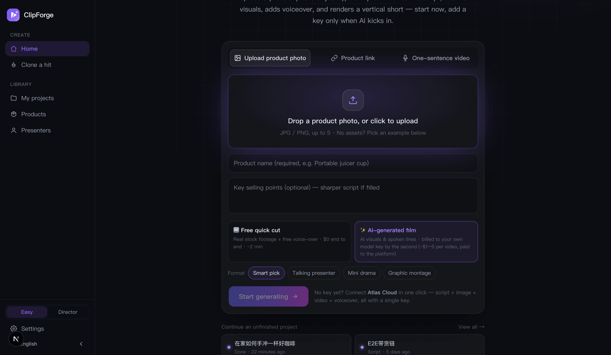
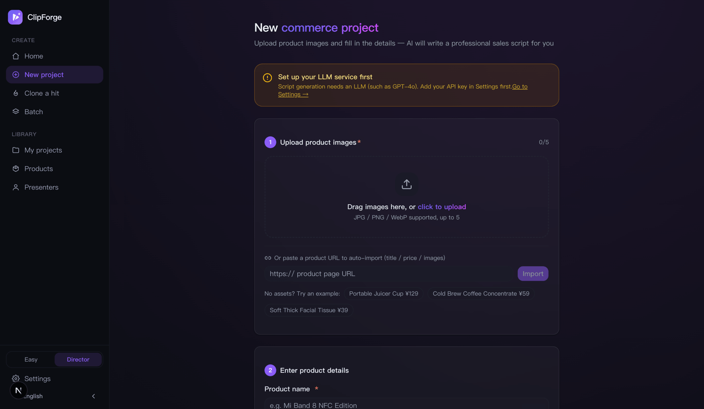

ClipForge User Guide: From Install to Your First AI Product Video
Bottom line first: 3 minutes and $0 gets you your first unwatermarked product video after install. ClipForge is an open-source (AGPL-3.0) AI short-video generator — drop a product photo or type a topic, and AI writes the script, fills the visuals, voices it and composes a vertical video. This guide covers install, the free path, AI films, commerce formats, the two workspace modes, viral cloning, batch and compliant publishing.
🧑🎓 This page is the condensed version. For the full click-by-click walkthrough with a troubleshooting table, read the beginner tutorial on GitHub (中文).
1. Install: pick any of three ways
Option 1: Desktop app (easiest)
Grab the macOS .dmg, Windows .exe or Linux .AppImage (Linux builds ship from v0.8.90 onward) from GitHub Releases — double-click and go; all data stays on your machine.
Option 2: Docker, one line
docker run -d -p 3000:3000 -v clipforge-data:/data ghcr.io/xixihhhh/clipforge:latestOption 3: From source (developers)
git clone https://github.com/xixihhhh/clipforge.git
cd clipforge && pnpm install && pnpm devFFmpeg is required for the free local compose path when running from source (brew install ffmpeg / apt install ffmpeg); the desktop build and the Docker image bundle it. Source installs must use pnpm — npm install fails on this repo.
Blocked by your OS? Get past it first (unsigned app, not malware)
- macOS "developer cannot be verified": right-click ClipForge in Applications → Open, then confirm — once only. If it says "damaged", run
xattr -cr /Applications/ClipForge.app. - Windows "Windows protected your PC": click More info → Run anyway.
- Linux AppImage does nothing:
chmod +x ClipForge-*.AppImage, then run it.
Did it install? Two-second check
Web/Docker: open http://localhost:3000/api/health and look for "status": "ok". Desktop: Settings → Diagnostics → Show diagnostics. Neither contains secrets, so both are safe to screenshot in a bug report.
2. Your first video in 3 minutes: the free quick cut ($0)
- Drop the product in: upload photos (up to 5), paste a product URL (title/price/images auto-extracted), or type a one-sentence topic. No assets? Tap an example product.
- Keep the default 🆓 Free quick cut: real stock footage + free AI voice-over, $0 end to end, ~2 minutes.
- Hit Start — script → free stock visuals → voice-over & compose, all behind one progress card, landing on the export page.

The only prerequisite: one LLM key for script writing (any OpenAI-protocol platform; ~$0.0002 per call on DeepSeek. Atlas Cloud is recommended — the same key later covers AI generation too). The page prompts inline on first use.
3. One key to unlock AI generation
ClipForge is open-source BYOK: the software is free forever; AI usage is billed by your chosen model platform — no markup, no middleman. One interface aggregates 30+ models across 7 platforms:
- Atlas Cloud (recommended): one key covers script + image (GPT Image 2) + video (full Seedance 2.5/2.0 family) + voice; paste it under Settings → Platform keys;
- Volcengine Ark, fal.ai, OpenAI, DeepSeek and more are supported — pick defaults under Settings → Image model / Video model;
- Model lists refresh at runtime, and custom model IDs are supported.
4. Free quick cut vs AI-generated film
| 🆓 Free quick cut | ✨ AI-generated film | |
|---|---|---|
| Visuals | Real stock footage montage | AI-generated frames & talking presenter |
| Cost | $0 (footage/voice/compose all free) | Per second: a 12s Seedance 2.5 film measured ~$3.60; budget tiers ~$0.3–0.7 per clip |
| Time | ~2–3 min | ~4–8 min |
| Best for | Topic content, daily volume, first try | Product-on-screen, UGC talking head, quality ceiling |
| Keys needed | LLM only | LLM + image + video model |
The AI path spends money on exactly one click: the free script is your text-level plan — read it on the “Script ready” gate, click “Generate with AI”, and the storyboard grid (one image generation locks person/room/light across all shots) → one-call film (Seedance 2.5 native cuts, lines spoken verbatim) runs hands-off to the export page.

5. Commerce formats & the presenter library
- Smart pick (default): AI chooses, product close-ups first;
- Talking presenter: a natural-looking person talks to camera — UGC realism rules baked in (spoken-language lines, lived-in backgrounds, behavior beats);
- Mini drama: a story-driven skit with per-character voices;
- Graphic montage: beat-synced image-and-text cuts.
For presenter formats you can pick from your presenter library: 4-view identity sheets (front/side/back/close-up in one generation) anchor the same face across shots and across videos.
6. Easy mode & Director mode
- Easy mode (default): one creation path, script → film hands-off, no storyboard, no jargon;
- Director mode: per-shot editing, the judge panel (four blunt judges tear the lines apart and rewrite at equal length), 18 camera presets + Mix overlays, visual looks, the grid, one-call film, the advanced form (category/audience/391 recipes) and the A/B variant matrix.

6B. Media analysis & production console (Director mode, v0.9.1)
These tools are for creators who need cost control, cross-shot consistency, and repeatable versioning; they stay out of the default one-tap path.
- Analyze source media: open Media Analysis from the sidebar and upload any image or video. ClipForge reads subjects, lighting, palette, composition, camera language, and pacing, then derives a reusable prompt that can be saved into a selected project.
- Build project visual memory: open the Production Console from a project's Assets page and record the core subject, action, environment, camera language, plus character / product / wardrobe anchors and forbidden changes. These compile into real image and image-to-video requests — they are not passive notes.
- See workflow and cost before spending: the console shows all nine stages, execution location, and billing status. Estimates use the current model catalog and show honest ranges when pricing is unknown; routing goals include balanced, cost, speed, quality, and consistency.
- Give each model the right references: per-shot generation combines the keyframe, character sheet, product image, and previous clip's real tail frame, then negotiates the strongest multi-reference or start/end-frame path the selected model accepts. Native-audio models bind exact dialogue, lip sync, ambience, and object sounds in the same generation; unsupported inputs fall back before submission instead of paying to test invalid parameters.
- Review generation quality shot by shot: a new generation no longer overwrites earlier takes. In Shot Quality Gate, a vision model checks visible fidelity, video timing, shot alignment, character / product identity, action binding, cross-shot continuity, and text. Videos are sampled across detected scenes, with time-specific evidence. The machine supplies scores, confidence, and inspectable observations; you decide whether to accept or reject each take.
- Repair only the affected time range: expand Precision Repair under a reviewed video take. Evidence suggests the start/end window, which you can adjust and augment with timed identity, product, composition, or continuity anchors. Generate a free preview first to inspect the effective range, billed model duration, cost, reference count, and fallbacks; the paid task is submitted only after you tick the cost confirmation. The result replaces only that window while source audio and older takes remain intact, and a remotely completed task can resume local finalization from the Assets page.
- Preview, snapshot, repair: snapshot the current script/assets/output relationship; Fast Preview uses the local 720p / veryfast tier without regenerating AI assets; after compose, QC can turn free issues into a confirmed repair composition and re-check, while any paid shot regeneration stays a plan until you approve it.
- Inspect cuts and create a master: start with Analyze in Cut Continuity & Mastering. ClipForge reads real timeline boundaries (or detects scenes for older outputs), compares exposure, chroma, and saturation on both sides, and measures whole-film loudness; only risky cuts expand into time-specific evidence. Analysis calls no model and changes nothing. Two-pass loudness normalization is explicit, while deflicker should be enabled only for confirmed temporal flicker because it re-encodes the picture. Every result is saved as a new composition version.
Accepted means active: the take you accept becomes that shot's real compose input; older takes remain available for comparison or rollback. Once enough project-local reviews exist, their observed results inform model routing. Regeneration and model switching remain suggestions and never spend automatically.
6C. Clip workbench and batch text editing (v0.9.2)
- Open a project's Assets page, choose Edit by text, and import MP4 / MOV / WebM / MKV / M4V footage up to 1 GB.
- Choose Tiny for a lightweight start, Base for balance, or experimental Small, then transcribe locally. Sources up to two hours are processed in fixed five-minute chunks, keeping memory bounded; cancel at any time and resume from the latest checkpoint while the earlier transcript remains usable until the new one finishes. The model is cached after its first download; WebGPU is preferred and compatibility mode is automatic.
- Clip workbench: find spoken phrases and target durations, preview the source, then select a range or enter one manually. Long transcripts use bounded sections with full-text search and playback location. Caption corrections preserve original timing and are saved with the edit version.
- Batch export: name up to 12 selected clips, preview their durations, then queue them together. Track progress, cancel individual renders, and retry saved plans after interruption from the version cards or task center.
- Click words to keep or remove them, or batch-mark fillers and silence. Playback skips removed ranges immediately; the timeline, duration estimate, undo, and redo update live.
- Choose Review changes to inspect removed words, ranges, and duration before confirming a new version. SRT / VTT / JSON cover captions and the edit plan; OTIO preserves editable A/V clips, EDL supports traditional NLE handoff, and CSV carries source/record timecodes plus transcript notes for review. MCP and CLI expose the same exports.
Relinking media: professional timelines contain only the original file name, never a local absolute path. Select the source once after importing into Premiere, Resolve, or another NLE.
6D. Local material library (v0.9.3)
- Expand Local material library on the Assets page. Upload up to 12 images or videos at a time, 80 MB each: MP4 / WebM / MOV / M4V / JPG / PNG / WebP.
- Track upload and verification progress, cancel, or retry only unfinished files. Identical content reuses the existing file and retains edited names and tags.
- Search names and tags, filter images/videos, and sort by upload time or name. Preview a material, choose a shot, and select Use in shot; earlier takes stay available in the quality panel.
- Fill empty shots locally reads only this project's library, without model calls or online stock sources. Selected ready or in-progress assets and product-image shots are protected; failed attempts and inactive historical takes do not block filling.
7. Viral cloning & trend picks
- Clone a hit: feed a reference video — its cut points and rhythm are parsed and rebuilt around your product (mind footage licensing);
- What to post today: a live trend board on the studio page; tap a trend to turn it into a video;
- Daily persona picks + cron + CLI = a hands-free daily posting machine.
8. Batch / MCP / CLI
- Batch mode (Director): queue 10 products before a sale;
- MCP Server: wire
clipforge-mcpinto Claude / Cursor and generate a video from one pasted product link; - CLI:
node bin/clipforge.mjs create --topic "..."for scripted or scheduled runs.
9. Export & compliant publishing
- 1080p unwatermarked MP4; 9:16 / 3:4 presets per platform plus a caption pack;
- AIGC provenance labels embedded by default (aligned with China's GB 45438-2025; visible "AI-generated" badge burned in);
- Pre-publish checks: throttling-risk self-check and an ad-law banned-word scan with rewrite suggestions.

10. Troubleshooting
| Symptom | Usually means | Fix |
|---|---|---|
| "No LLM configured — add an API key in Settings" | No script key yet | Settings → Script model → click a preset, paste the key, hit Test connection |
| Test connection fails / 401 | Wrong key or a stray space | Re-copy it; 402 means no credit, 404 means a wrong model name (use Read available models) |
| "No image/video model configured yet" | AI path missing models | Pick defaults under Image model and Video model, or connect Atlas with one key |
| Model dropdown is empty | That platform's key is missing/invalid | Fill it under Platform keys — models appear automatically |
| Product link not parsed | Site blocks scraping | Use Upload product photo instead |
| Video has no sound | Voice-over is off | Video page → Voiceover (TTS) → enable auto voice-over |
| Subtitles render as boxes | No CJK font in a custom environment | Use the official Docker image (fonts bundled) or install a CJK font |
Compose fails with a drawtext error | FFmpeg build lacks drawtext | Install FFmpeg from your package manager instead of a static build without harfbuzz |
| Docker projects vanished after restart | No data volume | Always run with -v clipforge-data:/data |
| localhost:3000 won't open | Port in use | PORT=3001 pnpm dev, or Docker -p 8080:3000 |
The longer list (npm/pnpm, better-sqlite3, stuck generations) lives in section 11 of the full tutorial.
11. Where your data lives & how to back it up
Projects, product images and rendered videos never leave your machine:
- macOS desktop:
~/Library/Application Support/ClipForge/data - Windows desktop:
%APPDATA%\ClipForge\data; Linux desktop:~/.config/ClipForge/data - From source:
data/in the project folder; Docker: volumeclipforge-data(/datain the container)
Inside you'll find sqlite.db, uploads/ and output/. To back up or move machines, copy the whole data directory. Keys live in local settings; diagnostics and logs contain no secrets.
12. FAQ
Can I really produce a video for $0?
Yes — free stock + free Edge TTS + local FFmpeg, unwatermarked and unlimited. Only script writing needs one LLM key (~$0.0002/call on DeepSeek).
How much is an AI film?
Billed by the second, printed on the option: the grid ≈ $0.18, a 12s Seedance 2.5 film ≈ $3.60; Mini tier ≈ $0.04/s. One confirmed click, billed to your own key.
Where is my data stored?
Entirely on your machine (SQLite + local files); Docker self-hosting works the same way.
Where do I ask questions?
GitHub Issues or Discussions — Chinese and English both welcome.
Ship your first video now
Free · open source · no watermark — a full video with zero keys.